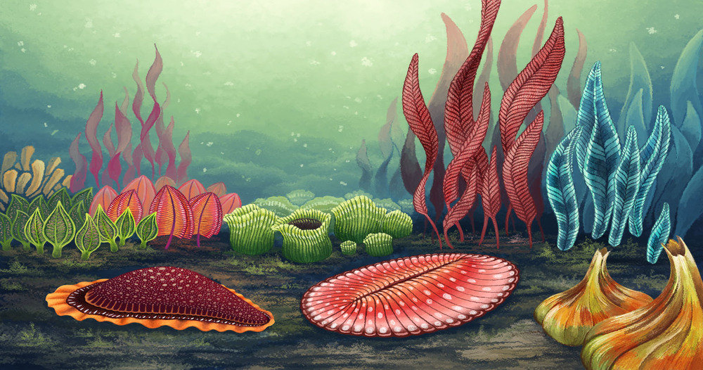
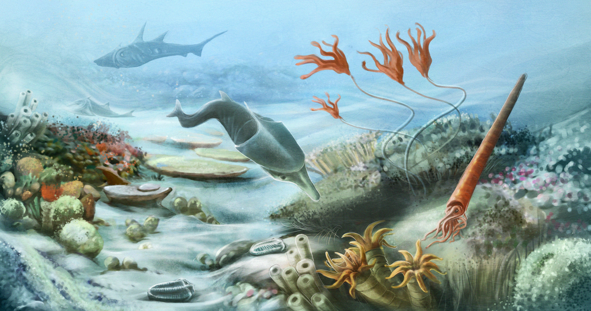
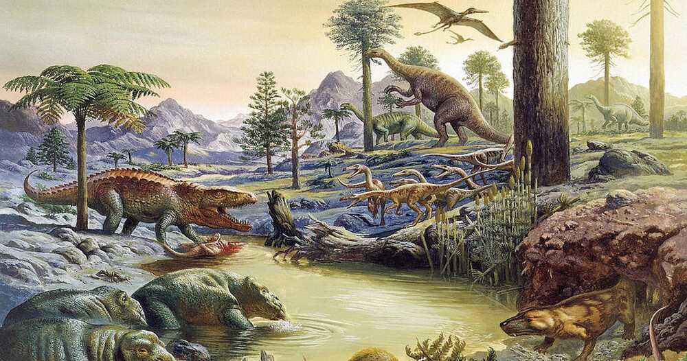
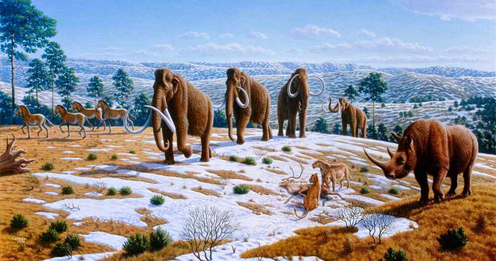

"It is not the strongest of the species that survive, nor the most intelligent, but the one most responsive to change." - Charles Darwin

Late Proterozoic Eon
Time Period: 650 M.Y.A to 541 M.Y.A
Additional information about the Late Proterozoic Eon.
Snowball Earth Glaciations: It was during this time, that Earth experienced its most severe ice ages.
These periods, often referred to as "Snowball Earth", saw the planet covered in ice from pole to pole, dramtically
affecting Earth's climate and life.
Rise of Multicellular Life: During this time, the Earth saw its emergence and diversification of mulicellular organisms.
The first group of large complex life forms to arrive were known as Ediacaran biota, which were percursors to many of the
life forms that would later dominate the Cambrian Explosion.
Formation of Supercontinents: This was a time of significant tectonic activity, thus leading to the assembly of
supercontinent Rodinia.

Paleozoic Era
Time Period: 541 M.Y.A to 252 M.Y.A
Additional information about the Paleozoic Eon.
Cambrian Explosion: The rapid expansion of life forms known as the Cambrian Explosion saw the emergence of several major animal groupings
as well as intricate ecosystems.
Formation and Breakup of Pangaea: By the conclusion of the eon, the majority of the Earth's landmasses were united under the supercontinent
Pangaea, which had formed.
End-Permian Extinction:the greatest mass extinction event in Earth history, which resulted in the extinction of around 70% of terrestrial species
and 90% of marine species.

Mesozoic Era
Time Period: 252 M.Y.A to 66 M.Y.A
Additional information about the Mesozoic Eon.
Rise of Dinosaurs: The Mesozoic, which began in the Triassic and lasted through the Jurassic and Cretaceous eras, is sometimes
referred to as the "Age of Dinosaurs" because of the dinosaurs' predominance in terrestrial ecosystems.
Breakup of Pangaea: Pangaea's ongoing breakup into the continents that we know today resulted in the development of the Atlantic
Ocean, which in turn affected sea levels and the world's climate.
End-Cretaceous Extinction: This catastrophe, which occurred around 66 million years ago, led to the mass extinction of many other
species, including dinosaurs, with the exception of avian ones. It also cleared the way for mammals to take over as the dominating terrestrial
creatures.

Cenozoic Era
Time Period: 66 M.Y.A to Present
Additional information about the Cenozoic Eon.
Rise of Mammals and Birds: The evolution of mammals and birds into the major terrestrial creatures following the demise
of the dinosaurs occurred 66 million years ago.
Formation of Modern Continents and Oceans: During the Cenozoic Era, continents continued to move into their present locations,
which had an impact on ocean currents and climatic patterns.
Ice Ages and Human Evolution: There have been several ice ages, the most recent of which being the Pleistocene. The evolution
of humanity and the creation of contemporary society also occurred during this time.